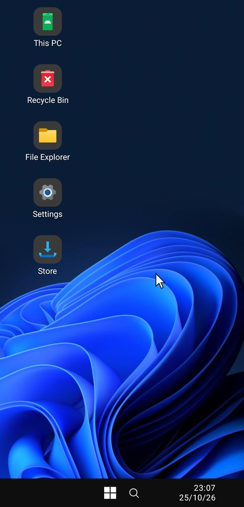
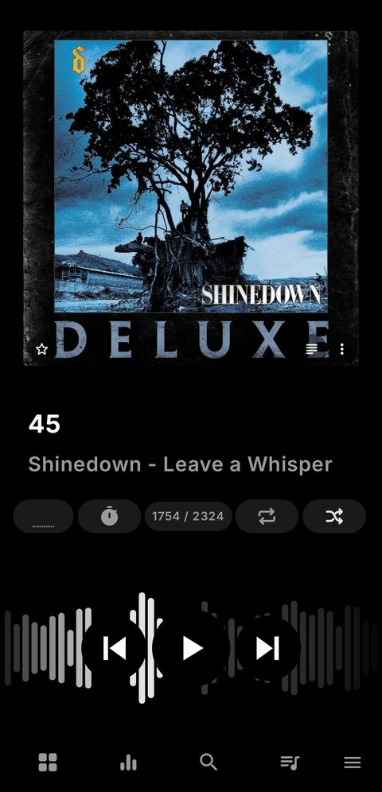
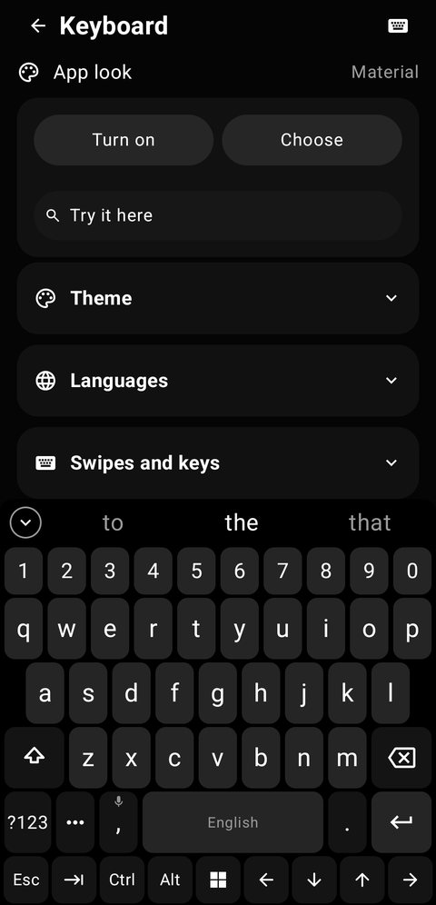
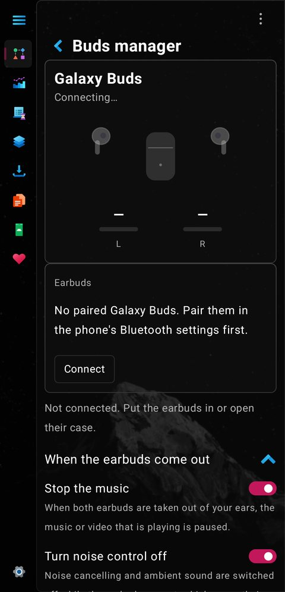
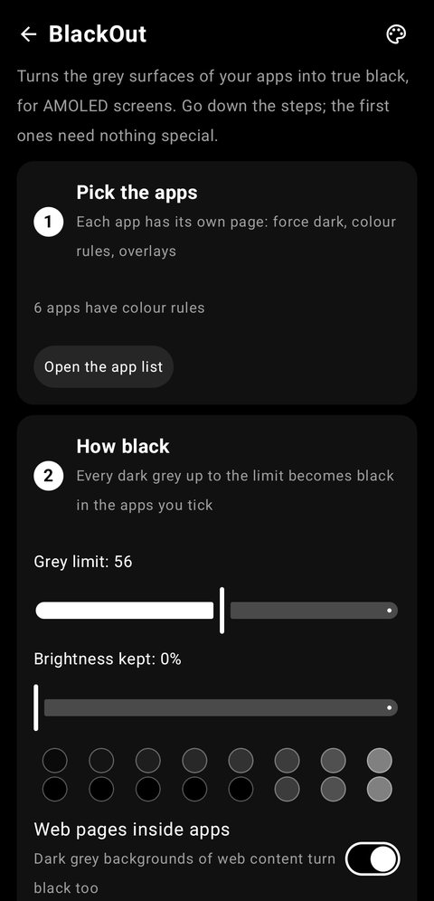
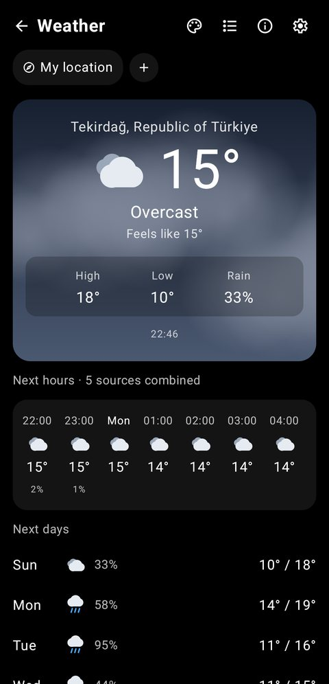
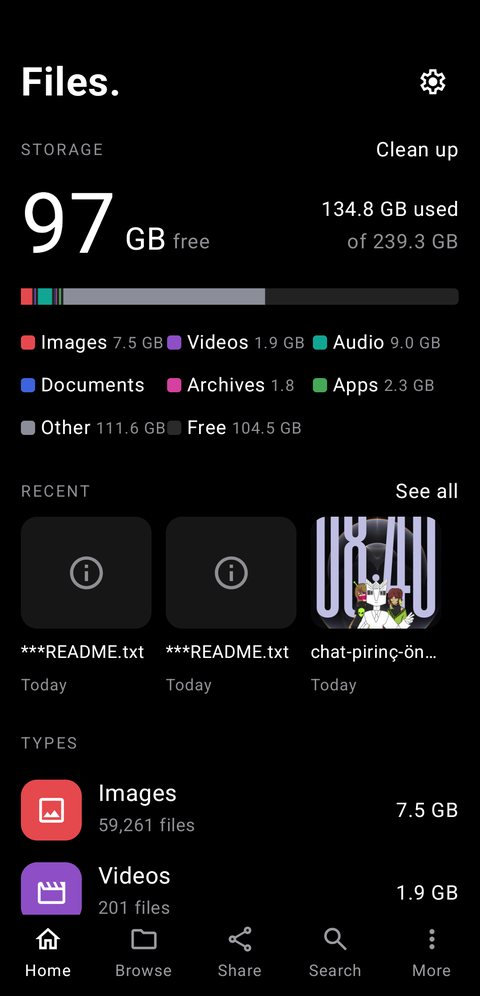
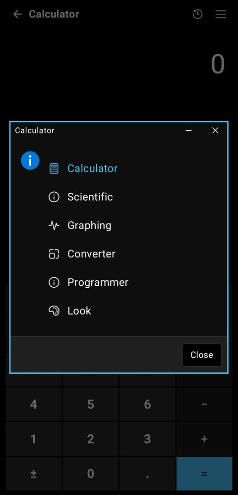

0looks, from Windows 95 to AMOLED
0extra apps with their own icon
0home-screen widgets and more
0MB at most
Everything in Pulse
Each part is built for every look and changes at once, no restart.
Built in the open
Kotlin and Jetpack Compose, GPL-3.0. Ideas, bugs and pull requests are welcome.